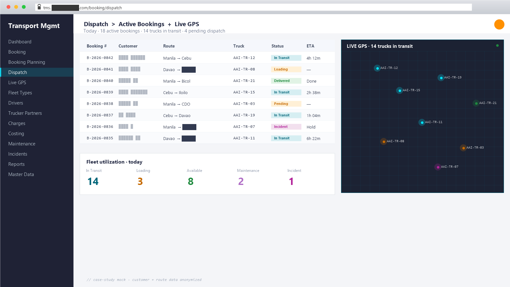

Transport Management System
Enterprise logistics dispatch + GPS + costing on Vue 3 + Laravel 11
A full-stack TMS that runs an enterprise logistics operator’s transport arm end-to-end — from customer booking through dispatch, costing, live-GPS tracking, incident handling, and maintenance scheduling to invoice. Companion to the WMS mobile app and the customer-service CRM, sharing the same Sanctum auth and Spatie permission system.
What it is
A platform the operator’s transport team runs every day: booking orders from customers, planning the dispatch across an internal fleet and external truckers, watching the trucks move on a live GPS map, logging incidents, generating costing & charge breakdowns, scheduling vehicle maintenance, and closing out the cycle by invoicing the customer.
Backend: Laravel 11 + MySQL + Sanctum + Spatie Permissions, with DomPDF for
document generation and maatwebsite/excel for bulk exports.
Frontend: Vue 3 (Vue CLI) on the Velzon admin template with AG Grid
Enterprise, Vue Router, Vuex modules, i18n, AOS, and a live-GPS map view.
~68 models, ~99 controllers,
~98 migrations, and ~324 Vue pages across
20+ domain folders.
The bottleneck
Before the TMS, the transport operations team worked across multiple disconnected tools:
- Bookings came in through email, phone, and spreadsheet templates — no single intake queue.
- Dispatch planning was a whiteboard plus a chat group, with status logged in a shared Excel file that drifted.
- GPS feeds came from the carrier’s own portal — the ops team had to keep two browser tabs open and reconcile by eye.
- Costing per booking was computed manually from a rate card workbook with breakdowns for trucking, containers, minimums, and surcharges.
- Vehicle maintenance was tracked in a separate sheet; missed services led to surprise breakdowns.
- Trucker partner companies and personnel were managed off-platform — suspensions and document expiries fell through the cracks.
- Customer billing was a manual reconciliation against the cost workbook, with the inevitable end-of-month scramble.
The team needed one system that owns the lifecycle from booking intake to invoice, with role-based access per operations team, live GPS on the same screen, and costing rules driven by data (rate cards, breakdowns, surcharges) instead of by Excel macros.
How I broke it down
- Modelled the booking lifecycle as explicit nouns.
Booking→BookingDetail→BookingStatusLog, withDispatchGroup,Drivers,DriverHelper, and trucker-partner records (TruckerCompany,TruckerPersonnel,TruckerRates,TruckerSuspension,TruckerPersonnelDocs) wired in as relationships. - Charges as a first-class domain. Separate
Charges,ChargeList,ChargeDetail,ChargeHeader, and a Costing engine (Costing→CostingCost→CostingDetails→CostingTariffs) so a single booking can be costed correctly under multiple rate-card schemes. - Spatie Permission for RBAC. Bought the proven role + permission package instead of building from scratch — the transport team needs many fine-grained verbs (book, dispatch, edit costing, release invoice) and Spatie handles them cleanly.
- Sanctum bearer tokens for the same auth surface used by the companion WMS mobile app and CRM, so a single internal SSO works across the ops stack.
- Live GPS on the dashboard.
GpsLocationrecords flow in from the carrier feed; the Vue app polls + interpolates on a map view so dispatchers can spot stuck-in-traffic and route exceptions early. - Excel bulk operations.
maatwebsite/excel+mavinoo/laravel-batchfor bulk import of rate cards and bulk export of billing breakdowns — the team lives in Excel for offline review. - Velzon admin theme for the UI foundation. ~324 Vue pages is too many to design from scratch; the theme buys consistent forms, modals, tables, and dashboards.
- Approval & data-restriction layer.
ChangesApproval+DataRestrictionmodels gate edits to sensitive records (rates, charges, customer pricing) so the system holds even when many users touch the same booking.
What I built
Domain modules shipped:
- Booking intake —
Booking,BookingDetails,BookingStatusLogs,BookingRemarksHistory,TrBookingHDR,TrBookingStatusHistory, with status workflow + remarks thread per booking. - Dispatch & planning —
DispatchGroup,Drivers,DriverHelper,DeliveryAssociate,TruckerDispatchGroup, with assignment workflows and a planning calendar view. - Fleet & vehicles — trucks, fleet types,
VehicleChecklistHeader+VehicleChecklistCategory+VehicleChecklistDetails, plusExemptPlateIdlesandUnavailabilityReasonfor downtime tracking. - Trucker partners —
TruckerCompany,TruckerPersonnel,TruckerPersonnelDocs,TruckerRates,TruckerSuspension— external-partner registry with rate cards and compliance docs. - Costing engine —
Costing→CostingCost→CostingDetails+CostingTariffs; per-booking cost breakdown with multiple tariff schemes. - Charges catalog —
Charges,ChargeList,ChargeDetail,ChargeHeader— configurable charge types layered onto bookings. - Live GPS —
GpsLocationstream with a live map view in the Vue UI for dispatch monitoring. - Incidents — incident logging during transit with severity classification and remarks history.
- Maintenance —
MaintenanceTemplate+ schedules per vehicle to surface upcoming services before they become breakdowns. - Master data —
Customer,Client,AreaCode,Country,Cities,Barangays,LocationCode,DocumentTypes,Uoms,Incoterm,TripType,FleetType. - RBAC — Spatie Laravel-Permission with
CommonPermissionoverlay for OU-style data restrictions andChangesApprovalfor sensitive-edit gating.

Tech
- Backend: Laravel 11 (PHP 8.2+), MySQL, Eloquent,
Sanctum, Spatie Laravel-Permission, DomPDF (barryvdh/laravel-dompdf),
maatwebsite/excel(XLSX import/export),mavinoo/laravel-batch(bulk DB ops), Carbon (date math), Laravel Telescope (dev debugging), Pint (style). - Frontend: Vue 3 (Vue CLI), Velzon Admin template, Vue Router, Vuex modules, Vue i18n, AG Grid Enterprise, ApexCharts, Chart.js, FullCalendar, Vuelidate, Flatpickr, Multiselect, AOS, file-saver, html-to-image — ~324 pages across booking, booking-planning, customer, fleet-types, live-gps, incident, maintenance, charges, dashboard, reports, calendar, and admin folders.
- Domain scope: ~68 Eloquent models · ~99 controllers · ~98 migrations on the API; ~324 Vue pages across 20+ domain folders on the UI.
- Tooling: VS Code · Claude Code · Git · Composer · Yarn · Postman.
Results
The platform consolidated booking, dispatch, GPS, costing, charges, incidents, maintenance, and billing onto a single ledger — the transport ops team stopped switching between five tools to do one booking. Trucker partners, vehicle maintenance schedules, and approval workflows now live where the records they affect live. Live GPS and the incidents log gave dispatch a single screen for the day instead of three open browser tabs.
Specific business figures (volume per day, on-time-delivery rate, cost-per-booking reduction) stay with the client; happy to discuss specifics on request.
What I’d do again — and differently
Worked well:
- Spatie Laravel-Permission over a hand-rolled RBAC. Saved days vs. the JBC/Pamanaland approach of building from scratch. The transport team’s permission matrix is dense enough that Spatie’s ergonomics paid for themselves in week one.
- Velzon admin theme. 324 pages is a lot of UI; the theme kept it visually consistent without a separate design pass per page.
- Modelling charges as their own subsystem.
Charges+ChargeList+ChargeDetail+ChargeHeaderseparated “catalog” from “applied to a booking” cleanly — rate changes don’t retroactively rewrite history. - Excel bulk operations. Bringing Excel into the system instead of fighting against it — the transport team genuinely prefers a CSV/XLSX export for offline review and a bulk import for updating rate cards.
Would tighten:
- Migrate Vue CLI → Vite. 324 pages on Vue CLI is slow to rebuild. Future projects start on Vite (same call as the HRIS project, which moved early and benefited).
- Push GPS interpolation server-side. The current client-side polling burns battery on dispatchers’ laptops; a small WebSocket gateway with server-interpolated positions would be cheaper.
- Lock in an integration-test suite around the costing engine earlier. Tariff changes are the most-feared edits in the system — reproducible tests against fixture bookings would have removed that fear.